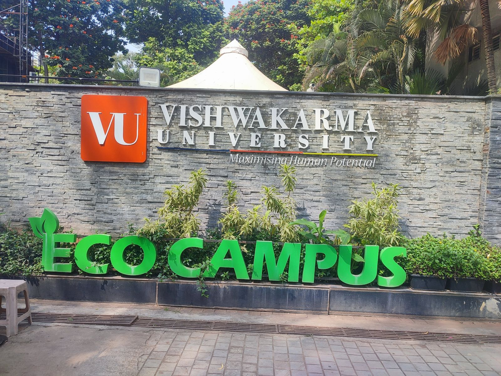

Electricity
Generator facility listed for backup power.
Idea: meter trends and unusual-use alertsFrom VU websiteThe facilities that support student life at Vishwakarma University, and how they could be monitored safely, with staff always keeping manual control.
For each area: what we found, where it comes from, and a possible monitoring use from Dhiraj's study.
Generator facility listed for backup power.
Idea: meter trends and unusual-use alertsFrom VU websiteRainwater harvesting and wastewater management listed.
Idea: tank-level warnings with staff inspectionFrom VU website"Eco Campus" signage and planting at the entrance; a biological waste disposer is listed.
Idea: track waste and water-saving resultsSeen on visitTouchscreen vending machine near a building entrance.
Idea: stock and fault alerts, digital refundsSeen on visitCCTV dome camera above a building entrance.
Idea: device-status alerts to security staffSeen on visitWi-Fi, library, cafeteria, hostel, bank and ATMs listed.
Idea: occupancy and opening-hours informationFrom VU websiteOpen gym, badminton, table tennis, basketball, football, cricket and more listed.
Idea: court booking and usage countsFrom VU websiteBuildings were seen from outside only; classroom controls were not inspected.
Idea: timetable-aware lighting with manual switchOur proposalDhiraj's proposed smart-classroom model. A listed facility does not mean an IoT system is installed, so this is a design idea, not VU's equipment.
Dhiraj's findings, each with a small, testable improvement.
| Finding | Suggested improvement | Source |
|---|---|---|
| Facilities need routine oversight (generator, water) | Start with location-based issue reporting: reported → checked → closed | VU website |
| Room use changes with the timetable | Scheduled, sensor-aware lighting with a manual switch | Our proposal |
| Utility levels change (tanks, power) | Use trends and sensible alert thresholds | Our proposal |
| Alerts need clear ownership | Assign each alert to a person who acknowledges it | Our proposal |
| Vending refunds rely on a handwritten phone number | Automatic refund and fault alert for failed vends | Seen on visit |
| Automatic controls can fail | Manual override and safe defaults | Our proposal |
A touchscreen smart vending machine. No classroom or utility automation was visible from public areas.
Not inspected. The proposed design keeps the wall switch in charge.
Not disclosed / Not available. Internal maintenance records were not shared.
Begin with a simple issue-reporting dashboard before installing any sensors.
